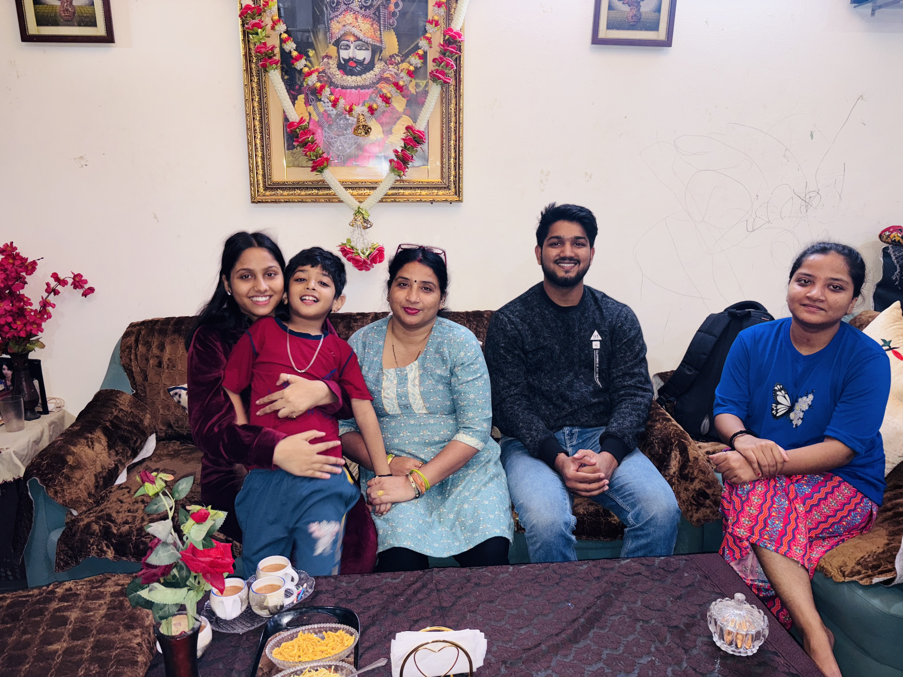
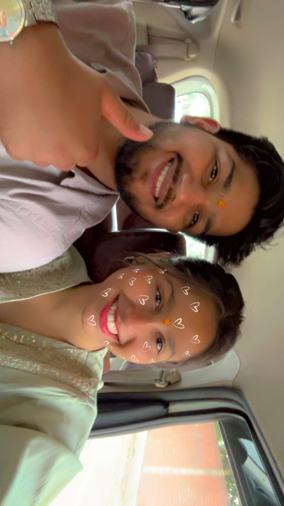
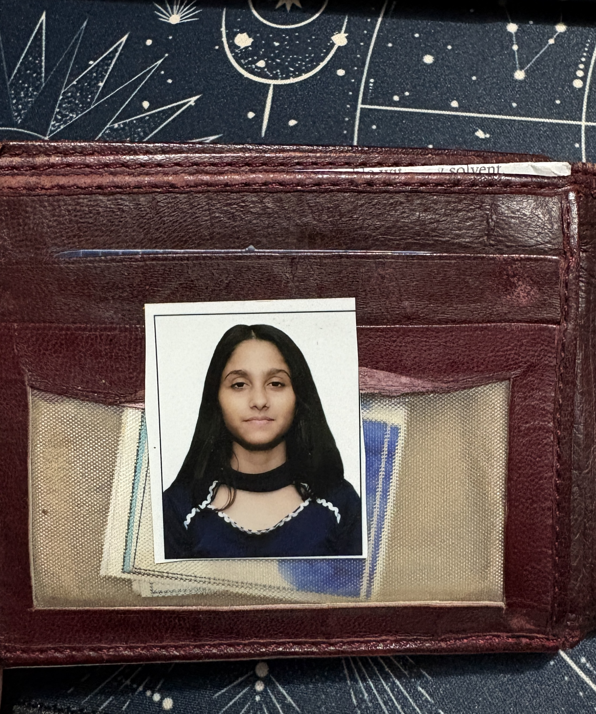
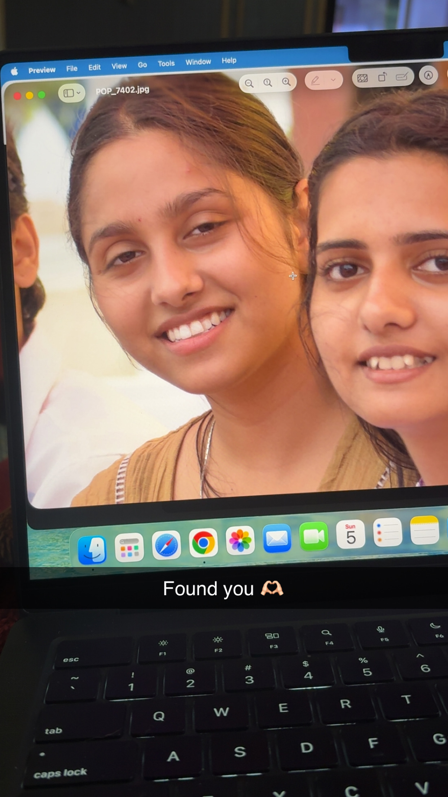
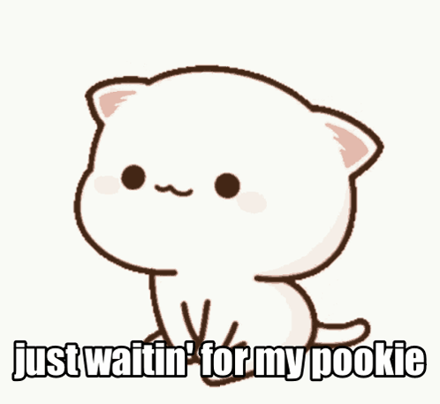
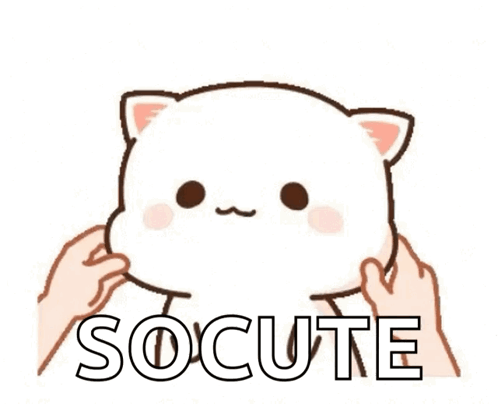

Ghar jaisa sukoon
From Harsh Gaur (Aapka Chotu)
Happy Birthday. Aaj ka din bas ek birthday nahi hai, yeh un saare lamhon ka celebration hai jo tumhare saath ya tumhe dekhkar dil mein roshni si banke reh gaye.
Is page ka har section, har photo, har line bas ek hi baat keh rahi hai: tum sirf yaad nahi aati, tum ek mehsoos hone wali dua lagti ho.
Chalo un lamhon mein chalte hain
“Kuch log zindagi mein aake bas sab kuch khoobsurat bana dete hain… tum vohi ho. Tumhare saath bitaye pal or saath ki photos dekh ke lagta hai jaise waqt ne un lamhon ko thoda aur jeene ke liye waqt rok diya ho.”
Ghar jaisa sukoon

Muskaan wali yaad
Tumhari smile mein ek narmi si baat hai, Jaise har gham se door ek chhoti si raat hai… Aur jab hum hamare parivaar(ofcourse mera bhi parivaar h vo) ke saath hote hain, Lagta hai yahi meri duniya, yahi meri har baat hai.

Apnapan
Is chhote se haath ko pakad ke laga, Jaise zindagi ne ek aur apna rishta de diya… Tumne sirf pyaar nahi, ek pyaara bhai diya, Aur yeh pal sikha gaya—khushi bas saath hone mein hoti hai.
"Tumhari yaad aise nahi aati jaise koi baat yaad aaye, Woh toh us purane gaane ki tarah hai jo dil ke kareeb khud baj jaaye… Na usse rok paate hain, na bhool paate hain, Bas har dhadkan ke saath usse jeete chale jaate hain.”
A little moving memory
Kuch moments ko likhne se zyada feel kiya jaata hai. Isliye yeh chhota sa clip yahan rakha hai, taki birthday par special or keemti pal balki mehsoos hone lage. cutie chotuu ki ek chhoti si smile, ek chhota sa moment, jo hamesha ke liye humare dil mein bas gaya hai.
Dream scrapbook
Maine saari photos aur dono gifs ko ek dreamy memory wall mein sajaya hai, taki yeh wish sirf dekhi na jaaye, dobara jee bhi jaaye.








Ek sach dil se
Main yeh maanta hoon ki hum dono ke beech jo uljhan bani, usmein waqt bhi theek nahi tha aur meri galtiyan bhi kam nahi thi. Shayad kuch baatein samajhne mein der hui, kuch jazbaat theek se sambhal nahi paaya, aur isi chakkar mein dard badhta gaya.
Par ek baat aaj bhi utni hi sach lagti hai: humara pyaar itna kamzor nahi ho sakta ki sirf galtiyon ke bojh ke neeche dab kar khatam ho jaaye. Jo rishta dil ki gehraai se bana ho, usmein maafi kamzori nahi hoti, woh maturity hoti hai. Woh yeh kehna hota hai ki "haan, chot lagi thi... par shayad jo apna tha, usse samajhne ka ek mauka aur diya ja sakta hai."
Insaan unhi jagahon par sabse zyada toot-ta hai jahan woh saccha hota hai. Aur kabhi-kabhi hum jis se sabse zyada pyaar karte hain, usi ko samajhne mein sabse zyada der kar dete hain. Main bas itna chahta hoon ki agar tumhare dil mein kahin bhi ek chhoti si naram jagah abhi bhi bachi ho, toh us jagah ko nafrat se nahi, ek imaandaar mauke se bharne dena.
Main tumse turant sab theek ho jaane ki umeed nahi maang raha. Bas itna maang raha hoon ki jo khoobsurat tha usse sirf bura waqt define na kare. Agar maafi dena tumhe theek lage, toh shayad hum dono ek baar phir se bina ego, bina purani laraiyon ke, sirf sachchai ke saath baat kar sakein.
Kabhi-kabhi dil ko sukoon explanation se nahi, intention se milta hai. Mera intention aaj bhi wahi hai: tumhari izzat, tumhari khushi, aur ek saccha sa mauka.
Dil se
Dua hai ki tumhari har subah halka sa music lekar aaye, har shaam tumhe sukoon de, aur har naya saal tumhe utni hi khoobsurti se treat kare jitni khoobsurti tum dusron ki life mein le aati ho.
Tum hasti raho, chamakti raho, aur hamesha yaad raho ki kisi ke dil mein tum ek bahut hi pyaari, dreamy, aur special jagah rakhti ho.